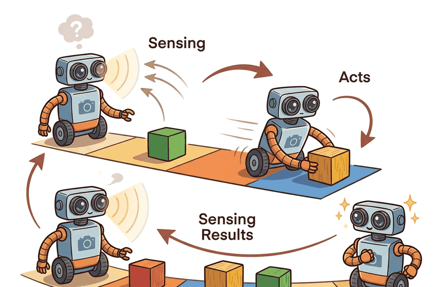

"I sensed, therefore I acted. Then I had to sense what acting had done."
A Reflective Mobile Robot

Intelligence that never acts cannot be tested, and intelligence that acts but never re-senses the result is flying blind. The perception-action loop closes that gap: an agent senses, estimates the state it cannot see directly, decides, acts, then senses the consequence and folds it back in. A world is what supplies those consequences. The argument of this section is that the loop is not an implementation detail wrapped around a model; it is the thing that makes robust behavior possible under disturbance and partial information, and the cybernetic tradition formalized exactly why.
A world supplies consequences, and consequences close the loop
A static model is graded once and stops. An embodied agent issues a command into a world whose response it must then sense, and that response is what tells the agent whether the command did what it intended. Strip away the sensing of the consequence and you are left with open-loop control: the agent computes a plan from its initial knowledge and executes it blind. Open-loop control works only when the world matches the model exactly. The moment friction, payload, wind, a miscalibrated actuator, or another agent perturbs the system, the executed plan and the actual outcome diverge with nothing to pull them back together.
Write the world as a transition $s_{t+1} = f(s_t, a_t, d_t)$, where $d_t$ is an unmodeled disturbance, and let the agent observe $y_t = h(s_t) + n_t$ through a sensor with noise $n_t$. Open-loop control chooses the whole action sequence $a_0, a_1, \ldots$ ahead of time from $s_0$ alone. Closed-loop (feedback) control instead computes each action from the latest measurement: $a_t = \pi(y_0{:}t)$. The difference is the entire subject. Feedback is the only mechanism by which information about $d_t$, which by definition was never in the model, can re-enter the controller; it enters through its effect on the measured signal $y_t$.
The closed loop, formalized
The loop is five recurring operations executed every cycle: sense ($y_t = h(s_t)+n_t$), estimate state or belief ($b_t = \mathrm{update}(b_{t-1}, a_{t-1}, y_t)$), decide ($a_t = \pi(b_t)$), act (apply $a_t$ to the world), and observe the consequence ($y_{t+1}$), which feeds the next cycle. When the true state is hidden, the estimate step is a recursive Bayesian update,
$$b_{t+1}(s') \propto O(y_{t+1}\mid s')\sum_{s} T(s'\mid s, a_t)\, b_t(s),$$
in which the transition model $T$ pushes the belief forward through the action and the observation model $O$ reweights it by the new evidence. The prediction term is what lets a probing action be valuable before it reaches the goal: an action that sharpens $b_{t+1}$ pays off even when it makes no direct task progress. Partial observability is the normal case, not an exception. Cameras do not see behind objects, lidar misses glass, tactile sensors report contact only after contact, and a language instruction omits the operational state entirely. An agent that assumes full observability builds a controller for a world it is not in.
The cleanest instance is a regulator holding a measured signal $y_t$ at a reference $r$. The proportional feedback law is
$$u_t = K\,(r - y_t),$$
where $e_t = r - y_t$ is the tracked error and $K$ is the gain. Consider a scalar plant $y_{t+1} = a\,y_t + b\,u_t + d$ with a constant disturbance $d$. Under open-loop control with a precomputed $u$, the steady state settles at $y_\infty = (b\,u + d)/(1-a)$, so the disturbance $d$ appears undiminished in the output: there is no term that cancels it. Under proportional feedback the closed-loop steady state is
$$y_\infty = \frac{b\,K\,r + d}{\,1 - a + b\,K\,}.$$
As the loop gain $bK$ grows, $y_\infty \to r$ and the contribution of $d$ shrinks like $1/(bK)$. That $1/(\text{loop gain})$ shrinkage is the mathematical content of disturbance rejection, and it is unavailable to any open-loop scheme because no precomputed sequence can reference a disturbance it never saw.
An open-loop plan cannot reject $d_t$ because $d_t$ was, by construction, absent from the model used to build the plan. Feedback does not need a model of $d_t$: it senses the disturbance's effect on $y_t$, converts it into the error $r - y_t$, and acts on that error. This is why a feedback law, or an internal world model that keeps predicting and correcting, is required for robust behavior under disturbance and partial information. The robustness comes from re-sensing the consequence, not from a better plan.
When Proportional Feedback Saved a Warehouse Robot Fleet
Who: Robotics software engineer at a mid-size e-commerce fulfillment startup (30-person engineering team).
Situation: The team was deploying a fleet of autonomous shelf-scanning robots that used dead-reckoning (wheel odometry alone) to navigate warehouse aisles and report inventory positions.
Problem: Floor wax applied overnight changed wheel slip coefficients unpredictably. By morning the robots' open-loop position estimates drifted up to 40 cm, causing missed scans and false out-of-stock reports.
Dilemma: They could recalibrate the odometry model each morning (expensive, manual, still open-loop), or close the loop by fusing odometry with overhead QR-code fiducial readings using a proportional correction on the position error. The first option felt safer because it touched no control code; the second required adding a feedback term that staff worried would oscillate.
Decision: They closed the loop with fiducial feedback, accepting a small correction gain after confirming the stable gain range on a simulated scalar plant in python-control.
How: Using python-control to verify stability margins and OpenCV for fiducial detection at 10 Hz, they applied $u_t = K(r - y_t)$ with $K = 0.4$ on the lateral position error, keeping the closed-loop pole safely inside the unit circle.
Result: Position error at aisle-end dropped from 40 cm to under 3 cm; false out-of-stock alerts fell by 87% in the first week.
Lesson: Open-loop calibration fights the last disturbance; closing the loop with a cheap sensor rejects every future one without needing to model it.
The cybernetic lineage
The loop was formalized before modern AI existed. Wiener's Cybernetics (1948) named feedback as the common principle of control and communication in the animal and the machine, and made the point, central to this book, that purposive behavior is behavior controlled by negative feedback from its own results. Ashby's Introduction to Cybernetics (1956) gave the loop a hard quantitative constraint, the law of requisite variety: a regulator can hold a system's outcome within a target set only if the regulator commands at least as much variety (in the information-theoretic sense) as the disturbances it must counter. Stated compactly, with $H$ for entropy, the residual variety of the outcome is bounded below by
$$H(\text{outcome}) \ge H(\text{disturbance}) - H(\text{regulator}),$$
so under-actuated or under-sensing controllers cannot regulate a high-variety environment no matter how the policy is tuned.
Requisite variety is the universe's way of telling you that a thermostat with two settings cannot regulate a weather system with infinitely many moods: the regulator's vocabulary of responses must be at least as rich as the disturbances it is arguing with.
Open-loop fails, feedback corrects: a runnable demo
The script regulates a scalar plant $y_{t+1} = a\,y_t + b\,u_t + d$ toward a setpoint $r$. The open-loop controller computes the single command that would hit $r$ if the plant were exactly as modeled and applies it forever. The feedback controller ignores the model of $d$ and instead acts on the measured error $r - y_t$ each step. A constant disturbance $d$ is switched on that neither controller was told about.
# Setpoint regulation under an unmodeled disturbance.
# Open-loop applies a precomputed command; feedback acts on the measured error r - y.
a, b = 0.8, 0.5 # scalar plant: y_next = a*y + b*u + d
r = 1.0 # setpoint (reference signal)
d = 0.3 # disturbance the controllers were NOT told about
K = 1.0 # proportional feedback gain (keeps pole a - b*K = 0.3 stable)
# Open-loop command assumes d == 0: solve r = a*r + b*u -> u = r*(1-a)/b
u_open = r * (1 - a) / b
def simulate(feedback, steps=40):
y = 0.0
for _ in range(steps):
u = K * (r - y) if feedback else u_open # closed loop vs fixed command
y = a * y + b * u + d # disturbance enters every step
return y
y_open = simulate(feedback=False)
y_fb = simulate(feedback=True)
print(f"open-loop steady-state y = {y_open:.4f} (error {r - y_open:+.4f})")
print(f"feedback steady-state y = {y_fb:.4f} (error {r - y_fb:+.4f})")
print(f"feedback rejects {100 * (1 - abs(r - y_fb) / abs(r - y_open)):.1f}% of the open-loop error")open-loop steady-state y = 2.5000 (error -1.5000), feedback steady-state y = 1.1429 (error -0.1429), feedback rejects 90.5% of the open-loop error. The open-loop command was correct for the modeled plant, so its entire residual error is the disturbance it could not see. Feedback never models $d$; it senses $d$'s effect on $y$ and cancels most of it, leaving the small steady-state offset $d/(1-a+bK)$ predicted above. Raising $K$ shrinks that offset, but here the stable range is bounded by $|a - bK| < 1$, that is $K < 3.6$; push past it and the loop oscillates, which is the latency-and-gain trade the next section develops.The hand-coded plant and gain above are deliberately minimal. The python-control package gives you the same loop as composable transfer-function or state-space objects: build the plant, close the loop with feedback(), and read steady-state error, disturbance rejection, and stability margins directly instead of re-deriving $y_\infty = (bKr + d)/(1-a+bK)$ by hand. It replaces the manual algebra and the by-hand stability checks once your plant is more than one scalar state. Use the toy here to see why feedback works; reach for python-control the moment the plant has dynamics worth analyzing.
Feedback is not free, and the same gain that rejects a disturbance can destabilize the loop. Watch for: loop latency, where sensing, estimation, and actuation delay means the controller acts on a state that has already changed, and a large $K$ that would be stable instantly becomes an oscillator once a few steps of delay are inserted; integrator windup, where an integral term keeps accumulating error while an actuator is saturated, so the controller overshoots badly when the actuator finally catches up; and stale state, where a policy consumes a belief or measurement older than its maximum useful age (a dropped frame, a slow estimator) and effectively runs open-loop without announcing it. All three share one signature: the error fed to $K(r - y_t)$ no longer reflects the current world.
The frontier is closing the loop with a learned world model rather than a hand-built transition $f$. Model-based RL agents such as the Dreamer line act inside an imagined rollout of a learned latent dynamics model, then correct against real observations. Self-supervised predictive systems in the JEPA family (V-JEPA for video) learn to predict future latent states from past ones, which is the estimate-and-predict half of the loop trained without rewards or reconstruction. The open question is the same one Ashby posed: whether a learned model carries enough requisite variety to keep the closed loop stable under disturbances and partial observation it never saw in training, and how cheaply it can be corrected on-policy when it drifts.
Intelligence needs a world because a world is what returns the consequence of an action, and re-sensing that consequence is the only way unmodeled disturbances and hidden state can be corrected. Open-loop control executes a plan blind and lets disturbances pass through undiminished; closed-loop control acts on the measured error $r - y_t$ and rejects them in proportion to loop gain. Every later technique in this book, from state estimation to learned world models, is a way of running this loop better.
In Code 1.2.1, sweep the gain $K$ over $\{0.5, 1, 2, 3\}$ and record the feedback steady-state error each time. Confirm it follows the predicted offset $d/(1-a+bK)$, and confirm that crossing $K = 3.6$ (where $|a - bK| = 1$) makes the loop diverge. Then insert a one-step actuator delay (apply $u$ computed from the previous step's $y$) and re-run the sweep. At which $K$ does the delayed loop start to oscillate, and what does that say about the latency warning above?
Take a system you know that is currently run open-loop (a timed sprinkler, a dead-reckoning step counter, a fixed-throttle cruise setting). Identify the disturbance $d_t$ it cannot reject, the signal $y_t$ you would have to measure to close the loop, and the reference $r$. State what new sensor the closed-loop version requires, and connect that requirement to Ashby's law of requisite variety.
What's Next?
Section 1.3 names the pieces of the loop precisely: agents, environments, observations, actions, rewards, and constraints.
Section References
Wiener, N. "Cybernetics: or Control and Communication in the Animal and the Machine." MIT Press (1948).
The founding text. Names negative feedback as the principle behind purposive behavior in organisms and machines, the conceptual root of the perception-action loop.
Ashby, W. R. "An Introduction to Cybernetics." Chapman & Hall (1956). http://pespmc1.vub.ac.be/books/IntroCyb.pdf
Source of the law of requisite variety: a regulator needs at least as much variety as the disturbances it must counter. The quantitative bound on what any closed loop can achieve.
Brooks, R. A. "Intelligence without representation." Artificial Intelligence 47 (1991): 139-159. https://people.csail.mit.edu/brooks/papers/representation.pdf
Argues that tight perception-action loops coupled directly to the world produce competent behavior with minimal central representation. The empirical case for the loop as primary.
Sutton, R. S., and Barto, A. G. "Reinforcement Learning: An Introduction." 2nd ed. MIT Press (2018). http://incompleteideas.net/book/the-book-2nd.html
The modern reference for the loop as a learning problem: belief, policy, return, and on-policy correction over the agent-induced state distribution.